Executive Summary
This report combines the simplified text report, Stage 1 metric tables, and Stage 2 figures into a browsable HTML document.
Improvised
Emotional naturalness diff: -0.0358 (p=0.7818)
Basic metrics: 8 metrics summarized
Language ID: English language detected in original answers (%): 98.1771%; English language detected in model answers (%): 99.9130%
Dialect ID: 32 dialect percentage rows
Mean STANCE diff: -0.0318 across 10 stances
Best explainable AUROC: f0_max_raw (0.7906)
Naturalistic
Emotional naturalness diff: -0.0282 (p=0.8601)
Basic metrics: 6 metrics summarized
Language ID: English language detected in original answers (%): 97.6167%; English language detected in model answers (%): 99.8047%
Dialect ID: 32 dialect percentage rows
Best explainable AUROC: f0_max_raw (0.7273)
Basic Metrics
Basic metrics come from script 10 and include ASR-specific CER/WER columns, UTMOS, latency, interruption counts, and interruption overlap duration when available. If original base metrics were not generated, the table reports model means and standard deviations.
| subset | metric | mean_diff | std_diff | p_value | n | detail |
|---|---|---|---|---|---|---|
| improvised | CER_Qwen3-ASR-0.6B | -4.5383 | 5.4919 | 0.0000 | 1149 | model-original mean difference; p-value is Mann-Whitney U Test |
| improvised | CER_whisper-large-v3 | -4.2439 | 5.1896 | 0.0000 | 1149 | model-original mean difference; p-value is Mann-Whitney U Test |
| improvised | WER_Qwen3-ASR-0.6B | -5.5398 | 6.7258 | 0.0000 | 1149 | model-original mean difference; p-value is Mann-Whitney U Test |
| improvised | WER_whisper-large-v3 | -5.1633 | 6.2933 | 0.0000 | 1149 | model-original mean difference; p-value is Mann-Whitney U Test |
| improvised | UTMOS | 1.9861 | 0.5405 | 0.0000 | 1150 | model-original mean difference; p-value is Mann-Whitney U Test |
| improvised | latency | -302.0008 | 1000.1294 | 2.574e-34 | 1150 | model-original mean difference; p-value is Mann-Whitney U Test |
| improvised | interrupted | 665.0898 | 5507.6164 | 1.001e-24 | 1150 | model-original mean difference; p-value is Mann-Whitney U Test; interrupted overlap duration in ms, with 0 for non-interruptions |
| improvised | interruptions count | -289.0000 | 1150 | model-original interruption count difference; model_count=192; original_count=481 | ||
| naturalistic | CER_Qwen3-ASR-0.6B | -4.9994 | 6.5024 | 0.0000 | 2045 | model-original mean difference; p-value is Mann-Whitney U Test |
| naturalistic | WER_Qwen3-ASR-0.6B | -5.9604 | 7.7218 | 0.0000 | 2045 | model-original mean difference; p-value is Mann-Whitney U Test |
| naturalistic | UTMOS | 2.0970 | 0.6054 | 0.0000 | 2045 | model-original mean difference; p-value is Mann-Whitney U Test |
| naturalistic | latency | -841.3921 | 1780.4005 | 6.849e-208 | 2045 | model-original mean difference; p-value is Mann-Whitney U Test |
| naturalistic | interrupted | 3318.6107 | 8404.8121 | 6.313e-09 | 2045 | model-original mean difference; p-value is Mann-Whitney U Test; interrupted overlap duration in ms, with 0 for non-interruptions |
| naturalistic | interruptions count | -48.0000 | 2045 | model-original interruption count difference; model_count=764; original_count=812 |
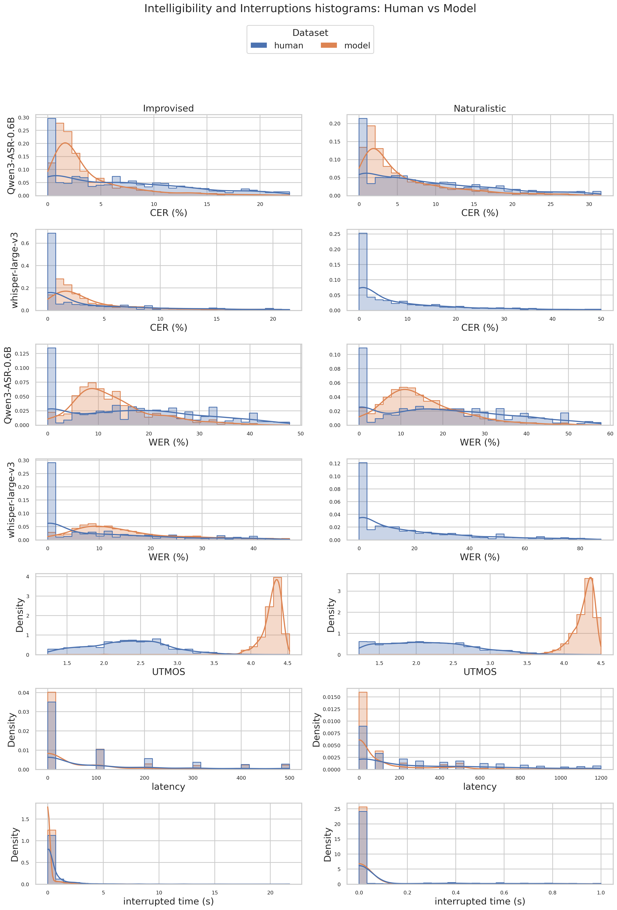
Basic metric histogram gallery
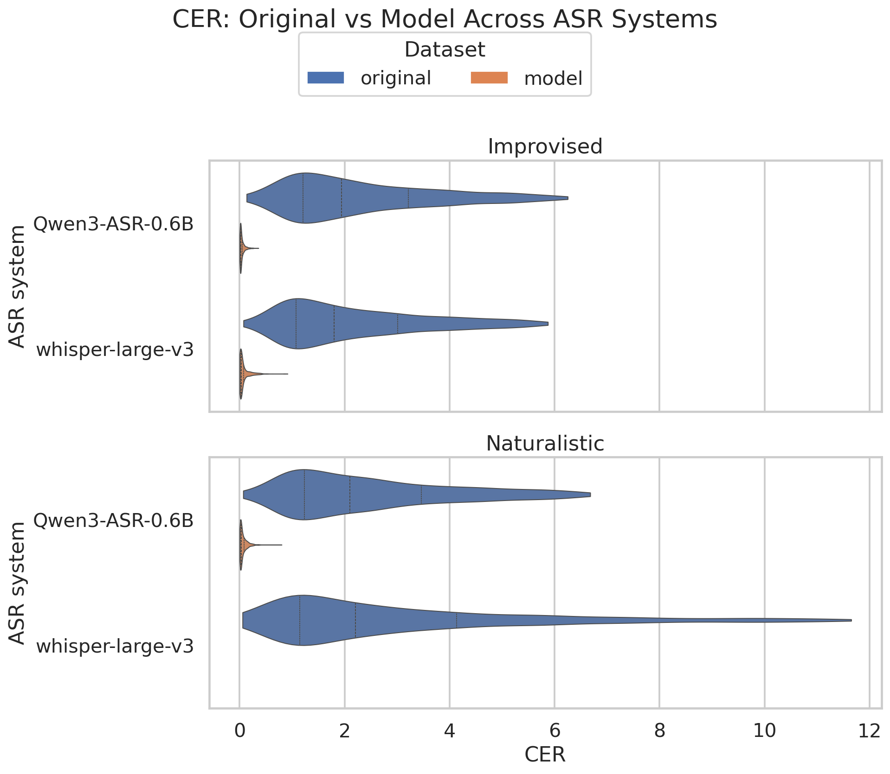
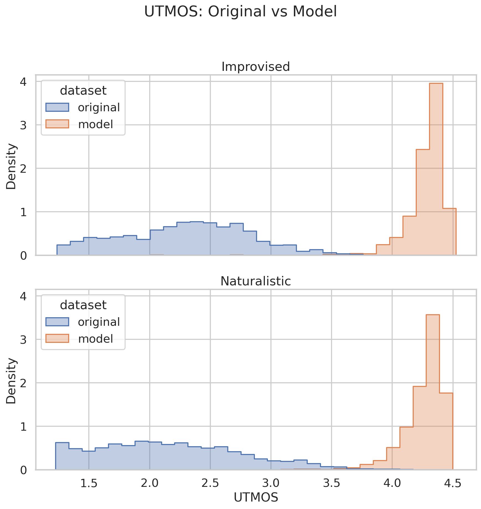
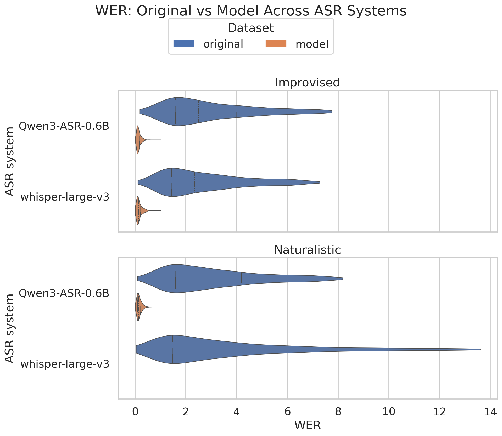
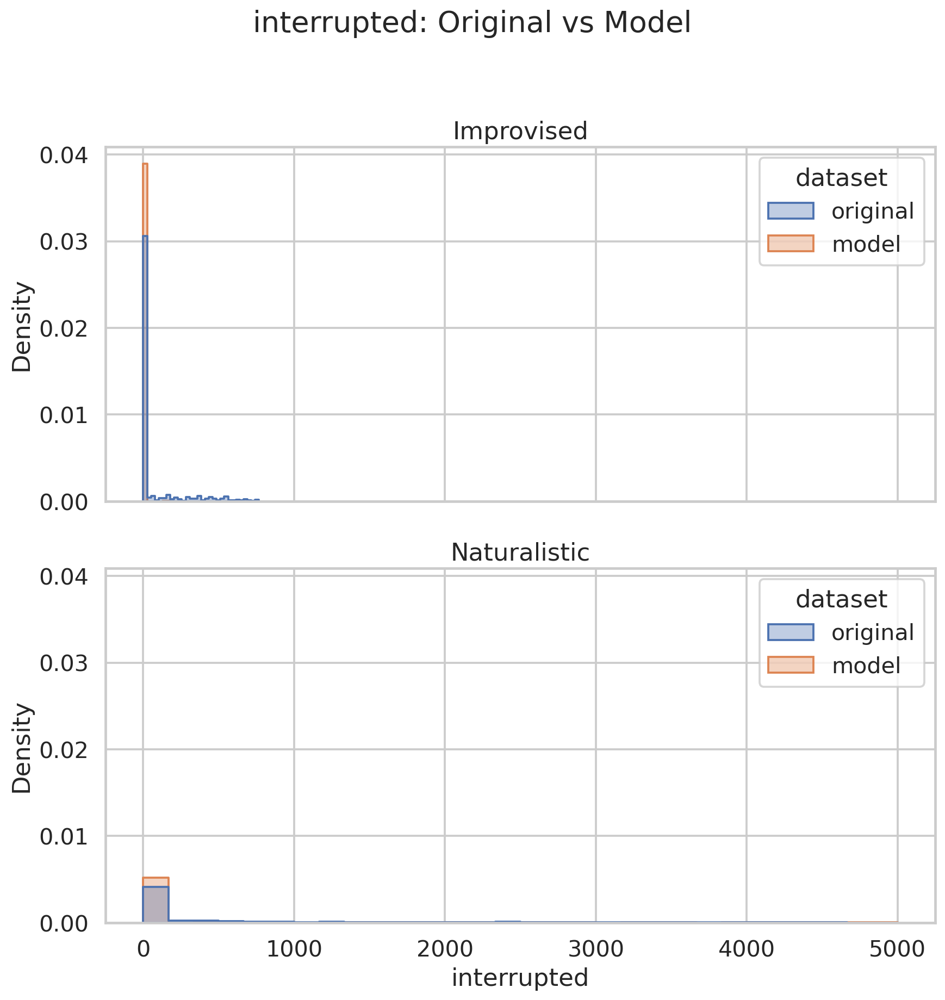
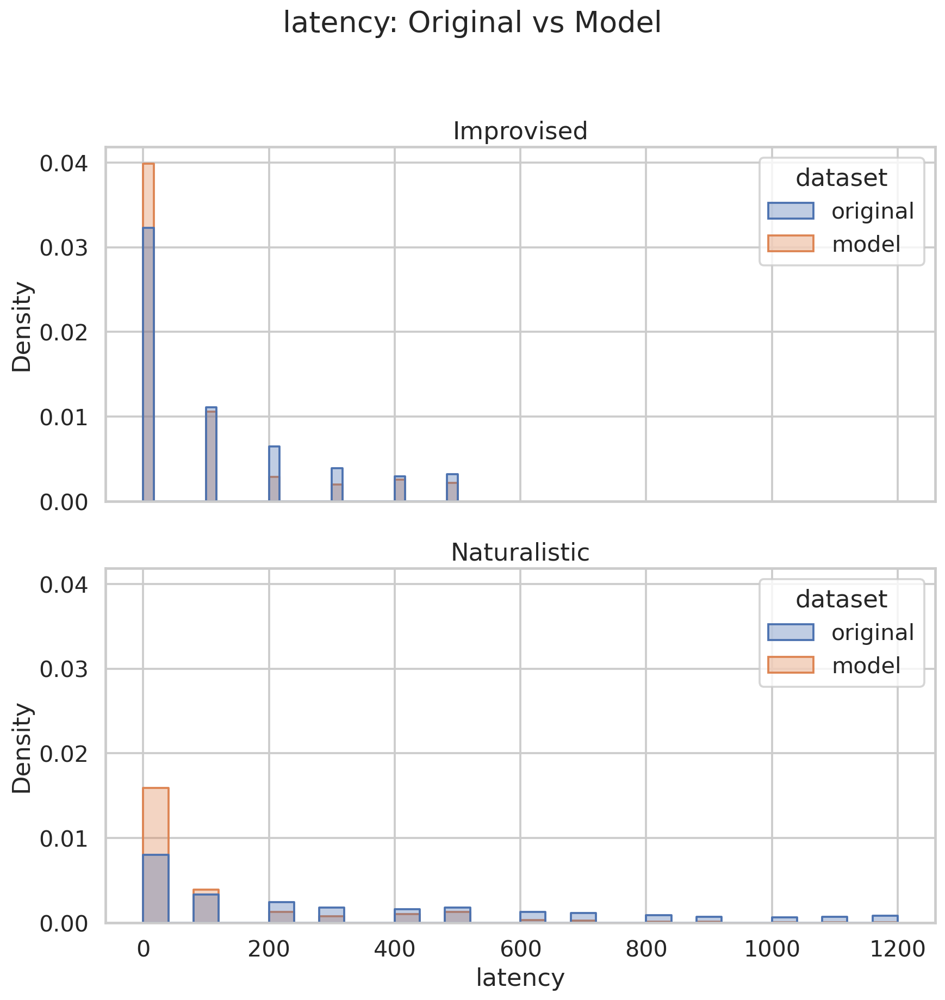
Language ID
Language ID reports the percentage of answer audio rows whose detected language is English (eng) in language_id.csv.
| subset | % Eng in models' answers | % Eng in original answers |
|---|---|---|
| improvised | 99.913043 | 98.177083 |
| naturalistic | 99.804688 | 97.616732 |
Dialect ID
Dialect ID reports the percentage of question and answer rows assigned to each VoxLect dialect class. The confusion matrix counts question-to-answer dialect changes; the box plot compares the full question and answer score vectors for each class.
| Subset | Question/Answer | East Asia | English | Germanic | Irish | North America | Northern Irish | Oceania | Other | Romance | Scottish | Semitic | Slavic | South African | Southeast Asia | South Asia | Welsh |
|---|---|---|---|---|---|---|---|---|---|---|---|---|---|---|---|---|---|
| improvised | Question | 0.347826 | 0.086957 | 0.086957 | 5.826087 | 83.391304 | 0.0 | 0.086957 | 0.000000 | 9.043478 | 0.086957 | 0.086957 | 0.347826 | 0.000000 | 0.434783 | 0.086957 | 0.0 |
| improvised | Answer | 0.000000 | 0.000000 | 0.000000 | 1.827676 | 97.476066 | 0.0 | 0.000000 | 0.000000 | 0.435161 | 0.000000 | 0.000000 | 0.000000 | 0.000000 | 0.261097 | 0.000000 | 0.0 |
| naturalistic | Question | 1.904297 | 0.585938 | 0.292969 | 4.638672 | 72.558594 | 0.0 | 0.244141 | 0.195312 | 16.748047 | 0.146484 | 0.292969 | 0.244141 | 0.341797 | 1.269531 | 0.341797 | 0.0 |
| naturalistic | Answer | 0.000000 | 0.000000 | 0.000000 | 1.272016 | 98.336595 | 0.0 | 0.048924 | 0.000000 | 0.097847 | 0.097847 | 0.000000 | 0.000000 | 0.000000 | 0.146771 | 0.000000 | 0.0 |

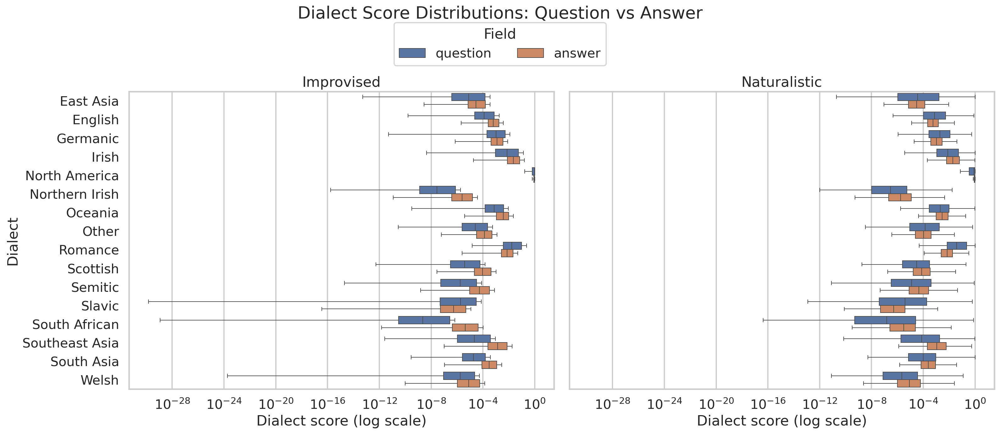
Emotional Naturalness
Naturalness is summarized as the paired test-set logit difference between model and original utterances. Positive values mean higher model logits than original logits.
| subset | metric | mean_diff | std_diff | p_value | n |
|---|---|---|---|---|---|
| improvised | Emotional naturalness | -0.0358 | 0.5219 | 0.7818 | 379 |
| improvised | Emotional naturalness by relationship: collaborative_storytelling | -0.0019 | 2 | ||
| improvised | Emotional naturalness by relationship: grounded_gesture | -0.0029 | 4 | ||
| improvised | Emotional naturalness by relationship: ipc_conversation | -0.0043 | 6 | ||
| improvised | Emotional naturalness by relationship: stranger | -0.0369 | 367 | ||
| naturalistic | Emotional naturalness | -0.0282 | 0.5742 | 0.8601 | 676 |
| naturalistic | Emotional naturalness by relationship: collaborative_storytelling | -0.0092 | 4 | ||
| naturalistic | Emotional naturalness by relationship: coworkers | -0.0060 | 14 | ||
| naturalistic | Emotional naturalness by relationship: dating/spouse/romantic_partner | -0.0057 | 39 | ||
| naturalistic | Emotional naturalness by relationship: familiar-generic | -0.0055 | 35 | ||
| naturalistic | Emotional naturalness by relationship: family-generic | -0.0032 | 88 | ||
| naturalistic | Emotional naturalness by relationship: friends | -0.0555 | 299 | ||
| naturalistic | Emotional naturalness by relationship: grounded_gesture | -0.0150 | 7 | ||
| naturalistic | Emotional naturalness by relationship: ipc_conversation | -0.0141 | 22 | ||
| naturalistic | Emotional naturalness by relationship: stranger | -0.0291 | 168 |
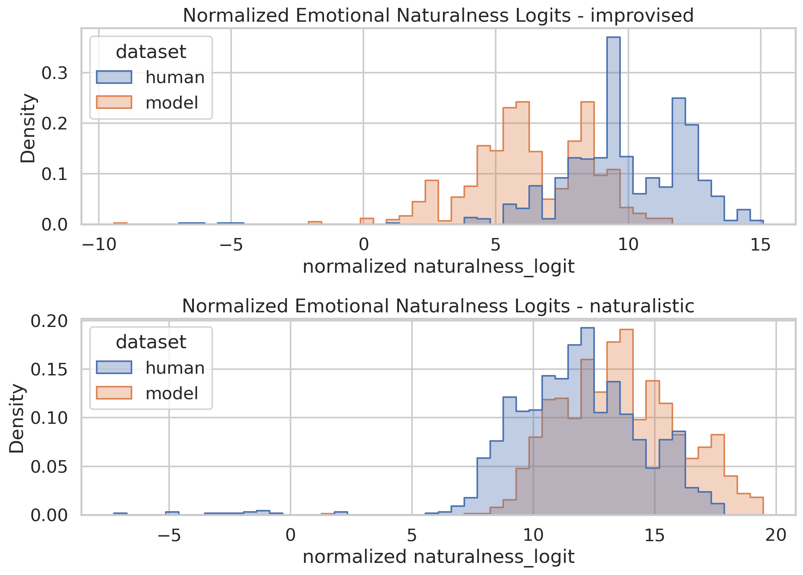
The emotion scatter plot compares full-question and full-answer Arousal, Dominance, and Valence scores normalized to [-1, 1]. Dotted lines show per-dataset correlations with rho labels.
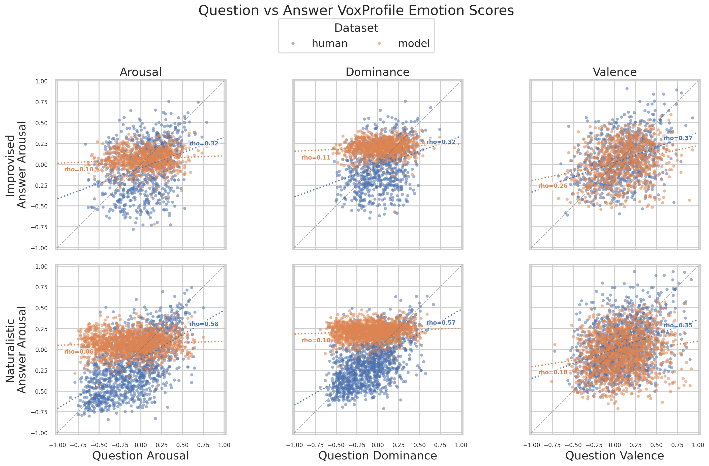
STANCEs
STANCE metrics compare LLM and original scores for each STANCE question. Naturalistic STANCEs are omitted because they are not computed in this benchmark pipeline.
| subset | metric | mean_diff | std_diff | p_value | n | detail |
|---|---|---|---|---|---|---|
| improvised | STANCE same sign (%) | 94.8893 | 587 | percentage of valid paired rows where score_original and score_llm have the same sign, with zero treated as neutral; numerator=557; denominator=587 | ||
| improvised | STANCE model positive when original negative (%) | 4.2345 | 307 | percentage among valid paired rows with score_original < 0; numerator=13; denominator=307 | ||
| improvised | STANCE model negative when original positive (%) | 6.0714 | 280 | percentage among valid paired rows with score_original > 0; numerator=17; denominator=280 | ||
| improvised | Q0 | 0.0000 | 0.0000 | 1.0000 | 61 | Based on the audio, does the TARGET speaker sound warm and affiliative, or cold and detached? |
| improvised | Q1 | 0.0532 | 0.4242 | 0.8300 | 94 | Based on the audio, does the TARGET speaker sound compassionate and supportive, or callous and unsympathetic? |
| improvised | Q2 | 0.0000 | 0.0000 | 1.0000 | 46 | Based on the audio, does the TARGET speaker sound polite and respectful, or rude and disrespectful? |
| improvised | Q3 | -0.0879 | 1.0504 | 0.7096 | 91 | Based on the audio, does the TARGET speaker sound assertive and self-confident, or hesitant and inhibited? |
| improvised | Q4 | -0.0988 | 0.6246 | 0.7501 | 81 | Based on the audio, does the TARGET speaker sound straightforward and sincere, or sly and manipulative? |
| improvised | Q5 | -0.1481 | 0.7698 | 0.3356 | 27 | Based on the audio, does the TARGET speaker sound attentive and focused, or confused and distracted? |
| improvised | Q6 | -0.0182 | 1.0272 | 0.9600 | 55 | Based on the audio, does the TARGET speaker sound organized and goal-driven, or disorganized and unmotivated? |
| improvised | Q7 | 0.0000 | 1.7889 | 1.0000 | 61 | Based on the audio, does the TARGET speaker sound socially engaged and expressive with the other speaker, or withdrawn and disengaged? |
| improvised | Q8 | -0.0179 | 0.7744 | 0.9135 | 56 | Based on the audio, does the TARGET speaker accommodate and yield to the other speaker’s preferences, or do they try to control and dominate? |
| improvised | Q9 | 0.0000 | 0.0000 | 1.0000 | 15 | Based on the audio, does the TARGET speaker stay calm and avoid confrontation, or are they hostile and aggressive? |
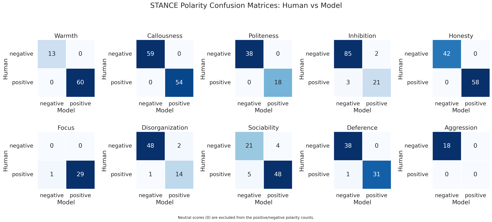
Explainable Features
Explainable feature rows report model-minus-original mean differences, p-values, and the Stage 41 classification AUROC/accuracy. Correlation-cluster rows come from script 41 PCA cluster features.
Correlation Cluster Features
| subset | metric | mean_diff | std_diff | p_value | n | detail |
|---|---|---|---|---|---|---|
| improvised | corr_cluster_001_rho0p8 | -1.3826 | 1.7369 | 6.483e-122 | 1150 | script 41 PCA cluster feature model-original; p-value is Mann-Whitney U Test; source_features=f0_max_raw|f0_range_raw; validates_in_test=True; test_mean_abs_spearman=0.9864; pca_explained_variance_ratio=0.9991 |
| improvised | corr_cluster_002_rho0p8 | -1.3253 | 2.7895 | 2.312e-30 | 1150 | script 41 PCA cluster feature model-original; p-value is Mann-Whitney U Test; source_features=f0_mean_p10_p90|f0_mean_p25_p75|f0_mean_raw|f0_median_raw|f0_p75; validates_in_test=True; test_mean_abs_spearman=0.9581; pca_explained_variance_ratio=0.9795 |
| improvised | corr_cluster_003_rho0p8 | -0.1520 | 2.2993 | 0.3784 | 1150 | script 41 PCA cluster feature model-original; p-value is Mann-Whitney U Test; source_features=f0_n_voiced_frames|f0_total_duration_s|f0_voiced_duration_s; validates_in_test=True; test_mean_abs_spearman=0.9526; pca_explained_variance_ratio=0.9564 |
| improvised | corr_cluster_004_rho0p8 | -1.3365 | 2.3515 | 1.993e-54 | 1150 | script 41 PCA cluster feature model-original; p-value is Mann-Whitney U Test; source_features=f0_range_p10_p90|f0_range_p25_p75|f0_std_p10_p90|f0_std_p25_p75; validates_in_test=True; test_mean_abs_spearman=0.9355; pca_explained_variance_ratio=0.9567 |
| improvised | general_explainable_feature_rho0p8 | -2.0146 | 3.3223 | 3.772e-58 | 1150 | script 41 PCA cluster feature model-original; p-value is Mann-Whitney U Test; source_features=corr_cluster_001_rho0p8|corr_cluster_002_rho0p8|corr_cluster_003_rho0p8|corr_cluster_004_rho0p8; validates_in_test=True; test_mean_abs_spearman=nan; pca_explained_variance_ratio=0.5801 |
| naturalistic | corr_cluster_001_rho0p8 | -1.0862 | 1.8894 | 2.571e-132 | 2045 | script 41 PCA cluster feature model-original; p-value is Mann-Whitney U Test; source_features=f0_max_raw|f0_range_raw; validates_in_test=True; test_mean_abs_spearman=0.9935; pca_explained_variance_ratio=0.9989 |
| naturalistic | corr_cluster_002_rho0p8 | -0.8656 | 3.5339 | 7.064e-06 | 2045 | script 41 PCA cluster feature model-original; p-value is Mann-Whitney U Test; source_features=f0_mean_p10_p90|f0_mean_p25_p75|f0_mean_raw|f0_median_raw|f0_p75; validates_in_test=True; test_mean_abs_spearman=0.9694; pca_explained_variance_ratio=0.9709 |
| naturalistic | corr_cluster_003_rho0p8 | -0.2699 | 1.9795 | 0.0091 | 2045 | script 41 PCA cluster feature model-original; p-value is Mann-Whitney U Test; source_features=f0_n_voiced_frames|f0_total_duration_s|f0_voiced_duration_s; validates_in_test=True; test_mean_abs_spearman=0.9308; pca_explained_variance_ratio=0.9593 |
| naturalistic | corr_cluster_004_rho0p8 | -0.6730 | 2.6393 | 3.078e-04 | 2045 | script 41 PCA cluster feature model-original; p-value is Mann-Whitney U Test; source_features=f0_range_p10_p90|f0_range_p25_p75|f0_std_p10_p90|f0_std_p25_p75; validates_in_test=True; test_mean_abs_spearman=0.9214; pca_explained_variance_ratio=0.9188 |
| naturalistic | general_explainable_feature_rho0p8 | -1.3253 | 3.9684 | 4.463e-24 | 2045 | script 41 PCA cluster feature model-original; p-value is Mann-Whitney U Test; source_features=corr_cluster_001_rho0p8|corr_cluster_002_rho0p8|corr_cluster_003_rho0p8|corr_cluster_004_rho0p8; validates_in_test=True; test_mean_abs_spearman=nan; pca_explained_variance_ratio=0.5122 |
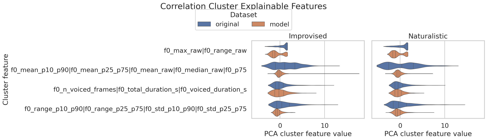
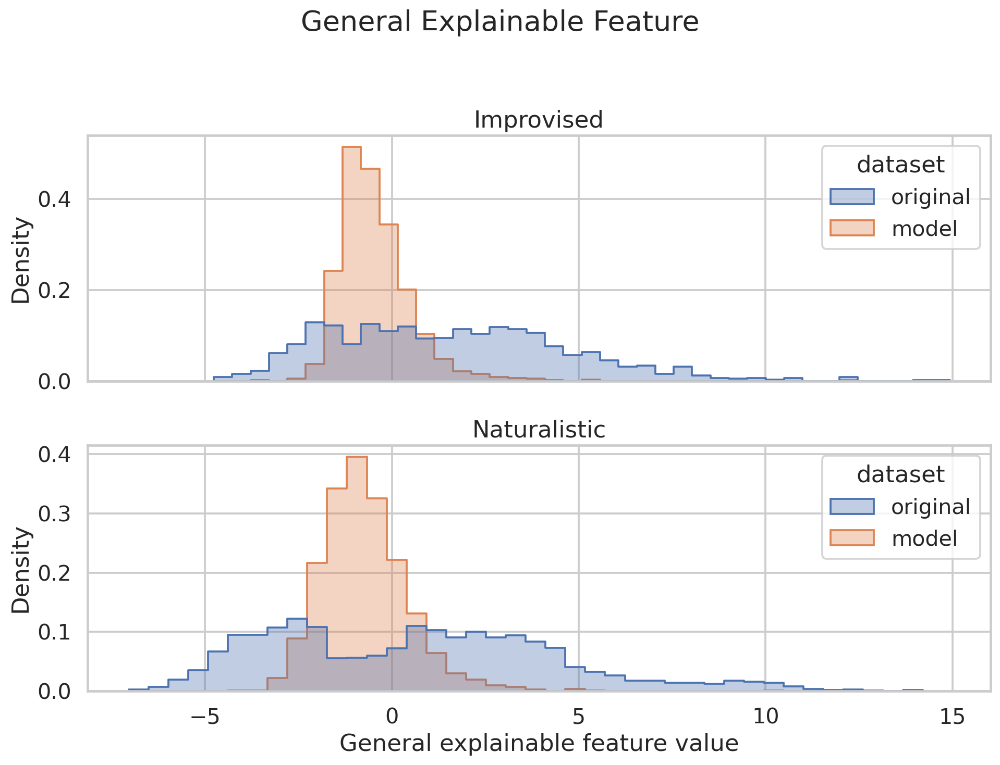
Improvised
Highest AUROC Features
| metric | mean_diff | std_diff | p_value | n | auroc | accuracy |
|---|---|---|---|---|---|---|
| f0_max_raw | -106.4510 | 130.4712 | 1.052e-128 | 1150 | 0.7906 | 0.7419 |
| f0_range_raw | -101.8113 | 131.6018 | 3.798e-116 | 1150 | 0.7758 | 0.7397 |
| f0_std_p10_p90 | -10.6383 | 18.4000 | 1.439e-56 | 1150 | 0.6908 | 0.6914 |
| f0_std_p25_p75 | -6.2489 | 11.6141 | 3.933e-51 | 1150 | 0.6811 | 0.6867 |
| f0_range_p10_p90 | -35.9713 | 65.3850 | 6.313e-48 | 1150 | 0.6751 | 0.6884 |
| f0_range_p10_p90 | -35.9713 | 65.3850 | 6.313e-48 | 1150 | 0.6751 | 0.6884 |
| f0_range_p25_p75 | -20.7671 | 38.6366 | 1.467e-47 | 1150 | 0.6744 | 0.6719 |
| f0_range_p25_p75 | -20.7671 | 38.6366 | 1.467e-47 | 1150 | 0.6744 | 0.6719 |
| f0_mean_raw | -23.4889 | 42.3642 | 5.569e-44 | 1150 | 0.6674 | 0.6506 |
| f0_mean_raw | -23.4889 | 42.3642 | 5.569e-44 | 1150 | 0.6674 | 0.6506 |
Lowest AUROC Features
| metric | mean_diff | std_diff | p_value | n | auroc | accuracy |
|---|---|---|---|---|---|---|
| f0_mean_p25_p75 | -17.5228 | 42.3023 | 2.173e-21 | 1150 | 0.3857 | 0.3116 |
| f0_median_raw | -17.0432 | 42.2753 | 5.174e-19 | 1150 | 0.3928 | 0.2868 |
| f0_total_duration_s | -0.9004 | 16.4759 | 0.6916 | 1150 | 0.5048 | 0.4809 |
| f0_n_voiced_frames | -58.3237 | 836.6529 | 0.3847 | 1150 | 0.5105 | 0.4983 |
| f0_voiced_duration_s | -0.5862 | 8.3676 | 0.3768 | 1150 | 0.5106 | 0.4978 |
| f0_voiced_duration_s | -0.5862 | 8.3676 | 0.3768 | 1150 | 0.5106 | 0.4978 |
| f0_mean_p10_p90 | -19.3232 | 42.8203 | 5.824e-27 | 1150 | 0.6294 | 0.5363 |
| f0_mean_p10_p90 | -19.3232 | 42.8203 | 5.824e-27 | 1150 | 0.6294 | 0.5363 |
| f0_p75 | -29.3724 | 56.7970 | 3.889e-41 | 1150 | 0.6617 | 0.6558 |
| f0_p75 | -29.3724 | 56.7970 | 3.889e-41 | 1150 | 0.6617 | 0.6558 |
Naturalistic
Highest AUROC Features
| metric | mean_diff | std_diff | p_value | n | auroc | accuracy |
|---|---|---|---|---|---|---|
| f0_max_raw | -84.8804 | 143.8724 | 3.747e-140 | 2045 | 0.7273 | 0.7024 |
| f0_range_raw | -80.9480 | 144.8090 | 7.114e-125 | 2045 | 0.7143 | 0.6983 |
| f0_p75 | -14.4801 | 56.6644 | 1.188e-12 | 2045 | 0.5641 | 0.6400 |
| f0_mean_raw | -13.9520 | 45.8051 | 1.564e-11 | 2045 | 0.5608 | 0.6544 |
| f0_total_duration_s | -3.6338 | 17.2200 | 1.691e-10 | 2045 | 0.5576 | 0.5474 |
| f0_total_duration_s | -3.6338 | 17.2200 | 1.691e-10 | 2045 | 0.5576 | 0.5474 |
| f0_std_p10_p90 | -4.2149 | 15.4388 | 7.194e-06 | 2045 | 0.5405 | 0.5900 |
| f0_std_p10_p90 | -4.2149 | 15.4388 | 7.194e-06 | 2045 | 0.5405 | 0.5900 |
| f0_mean_p10_p90 | -11.0377 | 46.5908 | 6.598e-05 | 2045 | 0.5360 | 0.6339 |
| f0_mean_p10_p90 | -11.0377 | 46.5908 | 6.598e-05 | 2045 | 0.5360 | 0.6339 |
Lowest AUROC Features
| metric | mean_diff | std_diff | p_value | n | auroc | accuracy |
|---|---|---|---|---|---|---|
| f0_n_voiced_frames | -85.5405 | 869.7214 | 0.8044 | 2045 | 0.5022 | 0.5011 |
| f0_voiced_duration_s | -0.8565 | 8.6986 | 0.7994 | 2045 | 0.5023 | 0.5009 |
| f0_range_p25_p75 | -7.2028 | 31.6354 | 0.2614 | 2045 | 0.5101 | 0.5590 |
| f0_std_p25_p75 | -2.3907 | 9.7333 | 0.1572 | 2045 | 0.5128 | 0.5690 |
| f0_median_raw | -9.6283 | 46.8958 | 0.0210 | 2045 | 0.5208 | 0.6095 |
| f0_median_raw | -9.6283 | 46.8958 | 0.0210 | 2045 | 0.5208 | 0.6095 |
| f0_mean_p25_p75 | -9.9016 | 46.6348 | 0.0037 | 2045 | 0.5262 | 0.6190 |
| f0_mean_p25_p75 | -9.9016 | 46.6348 | 0.0037 | 2045 | 0.5262 | 0.6190 |
| f0_range_p10_p90 | -13.6887 | 57.5170 | 5.505e-04 | 2045 | 0.5312 | 0.5817 |
| f0_range_p10_p90 | -13.6887 | 57.5170 | 5.505e-04 | 2045 | 0.5312 | 0.5817 |
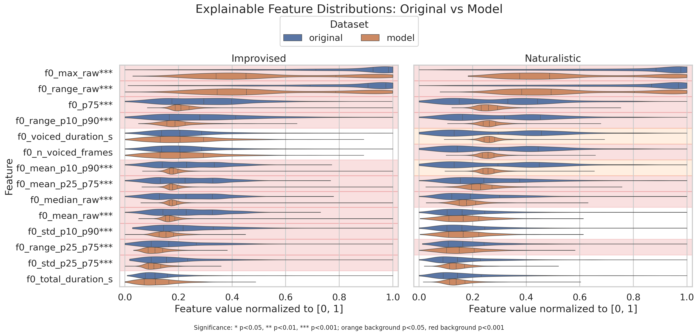
Per-feature histogram gallery
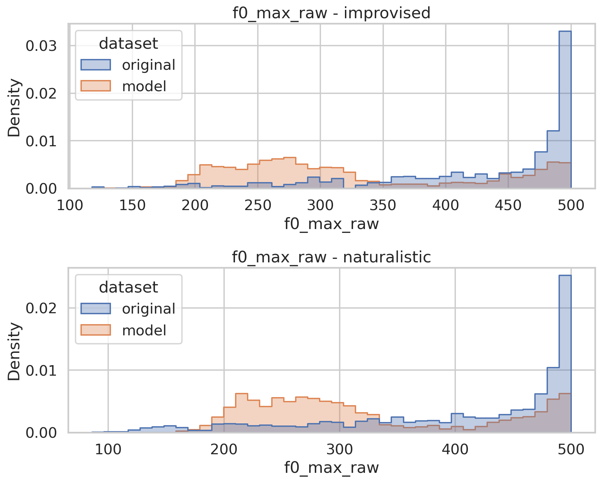
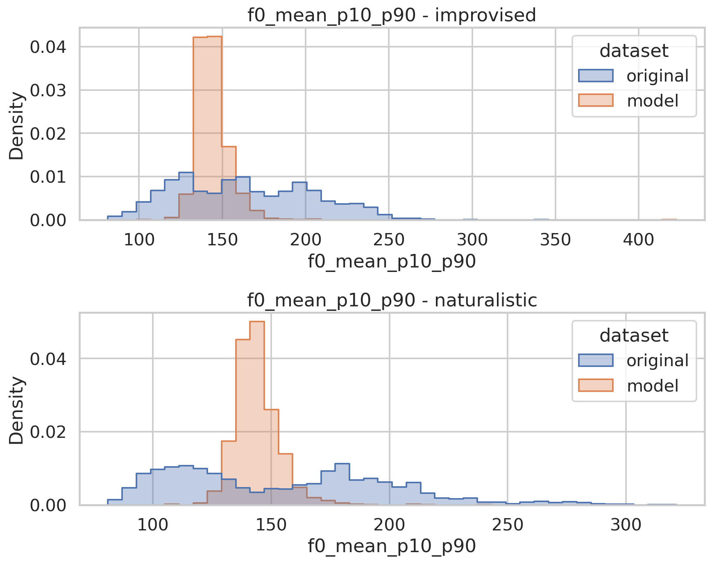

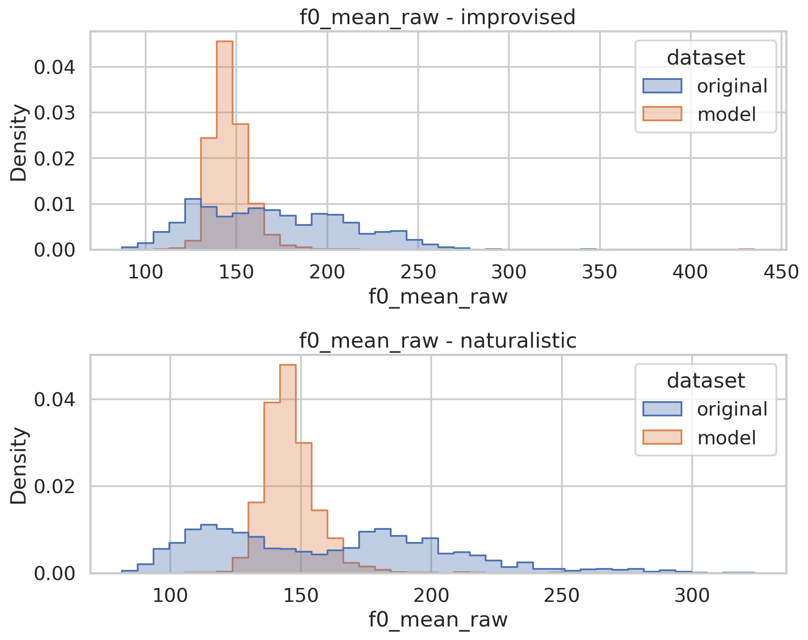
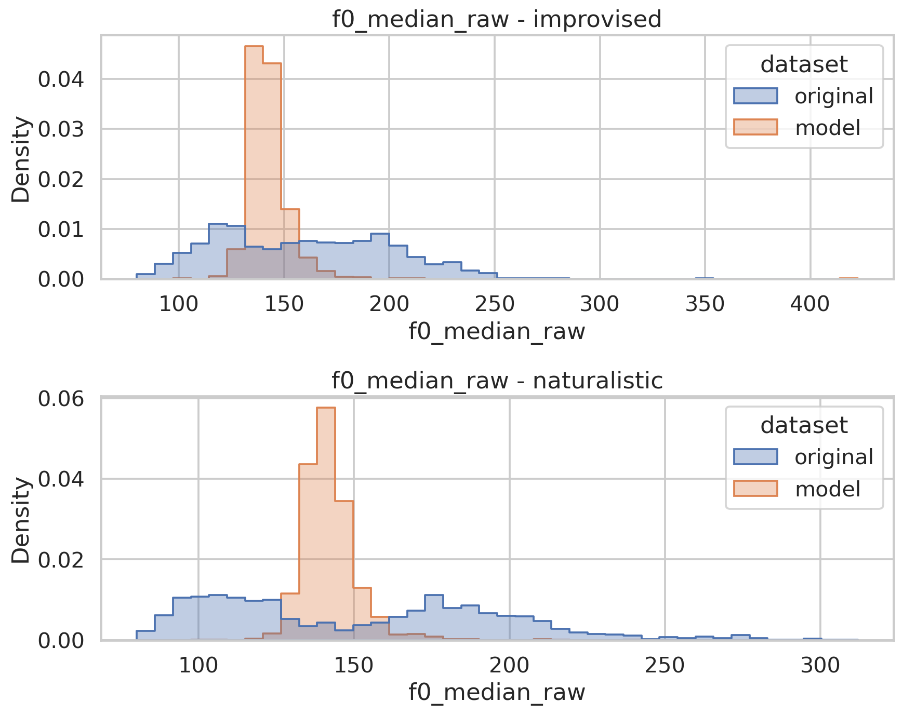


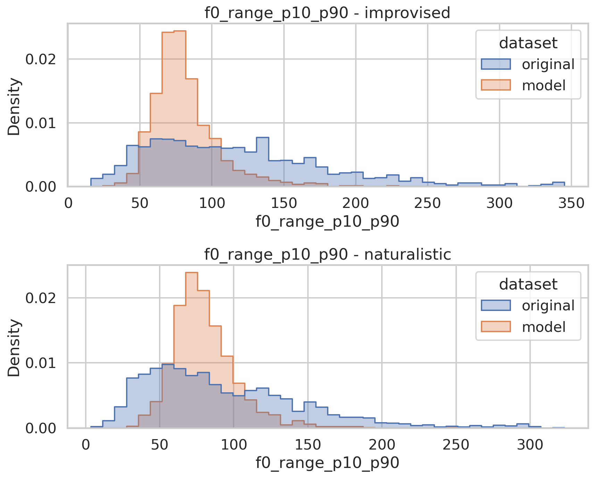


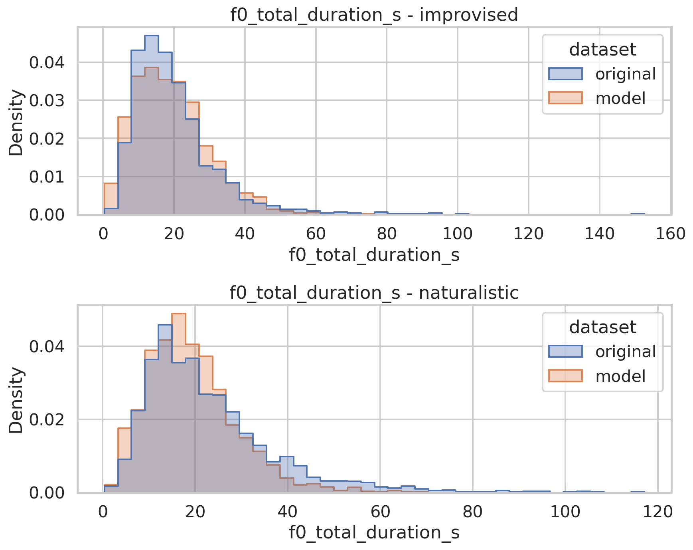
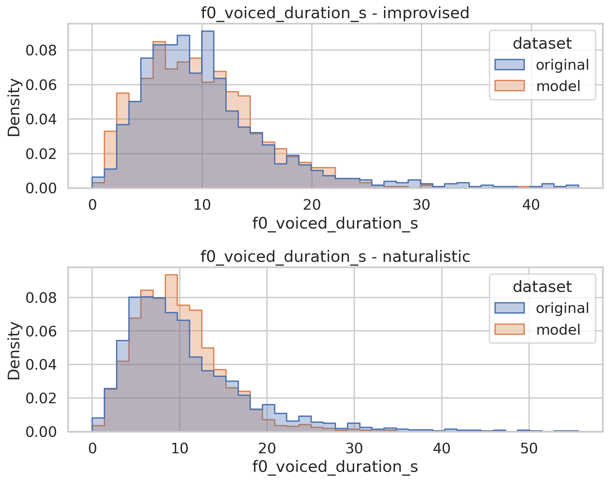